Journal#
Apr 30, 2025 - This article about AI cheating in tech interviews
made be think how tech sector remote-possible in 2000s, remote-friendly in 2010s, then remote-ubiquitous in 2020s.
The rise of AI-based products for cheating in the remote interviews driven by the demand moves us into a new era of remote-fraudulent starting around 2025.
Apr 27, 2025 - overwheLLMed. Courtesy of https://worksonmymachine.substack.com/p/the-coming-knowledge-work-supply
Apr 27, 2025 - I keep catching myself at the thought of inevitable decline.
Am I at my peak? Or am I past it? Is it only downhill ahead?
I think I can’t find a breaking point because there’s so many aspects to be considered.
Like cognitive decline, that starts at twenty one, but is balanced out by growing pattern matching library.
The shrinking breadth of opportunities, countered by accumulated wealth.
Apr 26, 2025 - Three rules of the playground:
No dying.
No breaking bones.
No fighting.
Apr 02, 2025 - TIL about Happy Eyeballs - the weirdest name for trying to connect to IPv4 and IPv6 addresses simultaneously to reduce the request time in case one of them is not accessible.
They call it an “algorithm”, and it has dedicated libraries, like aiohappyeyeballs 👏
Mar 30, 2025 - TIL about Amdahl’s Law.
The wikipedia article has this nice chart:
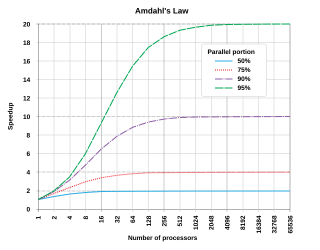
Somewhat counter-intuitively, for the case when 90% (9/10th) of the task can be parallelized, splitting it into 10 workers, would not result in 10 times speed improvement. It won’t even be 9 times. The overall time of the task completion will only get faster by 5 times.
Wait, what?! We had this massively parallelizable task, 90%. Seems like the rest is peanuts. We divide 90% of the task between 10 workers, it gets done 10 times faster, right? Right, but, the remaining sequential 10% still take the same amount of time. 90% of original task time divided by 10 is 9%. The new proportion of parallel work is only ~47%, less than a half.
To illustrate the time improvement in this example with an equation:
To put the units, it means that a task that a single worker completes in one hour, ten workers will do in 11 minutes and 24 seconds.
Mar 28, 2025 - Imaging having to learn jQuery in 2025. How does it make you feel?
Mar 21, 2025 - In the meantime, in the LG headquarters:
How’s our extended reality department performing?
Ah, not great. The market doesn’t grow as much as we thought.
I see. What about air conditioning?
What about it?
Is it good?
Yeah, HVAC is great, no problems there.
Okay, let’s do that instead.
Instead of XR?
Yeah, screw it. The future is in HVAC. Really promising direction.
Sure, I’ll dissolve the XR department by the end of week.
Mar 15, 2025 - In times when the life feels like too much, I remind myself of the words of my high school literature teacher.
When hearing complaints from the students about how big the home assignments are and how they don’t have enough time to prepare for all the subjects, she always said: “You’ll take rest in afterlife.”
For some students it sounded harsh, for other like a joke, but for all not much of an actionable advice.
It took me many years to understand that the idea is sound.
The life stops when you lay down in the coffin.
Until then, the purpose of life is to live it.
The more you do, the more capable you become of doing more.
On the other hand, the mind at rest weakens rapidly.
Humans adapt to good fast, and from the body’s perspective concerving energy is good.
Optimizing for minimum effort to get maximum pleasure.
Which is in contrast with a notion of productive life.
One has push themselves out of the comfort zone to achieve the greatness.
Taking rest is a step back rather then a mere pause.
Mar 14, 2025 - Reading CTO Handbook made me realize, that if I had a great startup idea and the right people around me, I would do things that I’ve never done before, many of which I deliberately chose not to do. I would also do a few nice things, but mostly the other kind.
Mar 14, 2025 -
Some people, aspire for greater things, and manage to build their way to the goal.
Other people are happy with what they got, maybe incrementally improve situation over time, or stay in the same place and enjoy themselves.
And some people say: “Oh, if I had this and that, I would achieve great things, build something amazing.”
Naturally, they never do, because that would put them in the first group.
I’d say this is some kind of a mental block, that doesn’t let them to join one of the other groups.
It makes them pathologically unhappy, leading them to put the blame on external forces, government, society, status, people, anything except for their own mindset.
People who are messed up in the head and capable of action belong in the nuthouse.
Messed up in the head but incapable of action - society burden.
This is not a person’s property, it only applies to some aspects and only within some timeframe.
Mar 10, 2025 - Added Configuration-Driven Development
Mar 05, 2025 - Something extremely important if you want to make a point. And absolutely insignificant for all other purposes. “Technicality”.
Mar 03, 2025 - A week-long vacation definitely helps with the unexplainable dreadful feelings.
The best (and only) solution to work-related stress is to not work.
Mar 03, 2025 - I think Sean Goedecke is onto something in his post “Knowing where your engineer salary comes from”.
While the post is inline with his recurring cornerstone of a mature-pragmattic-staff-engineer, he touches on a topic of different lenses to look onto a software project.
Engineers focus on problem complexity (and solution simplicity), performance, architecture and whatnot.
The bridge to business people is effort estimate in man hours.
Which translates roughly to costs of implementation.
That business people use to weight against the projected profits over the lifetime of the project (in years).
Also, weighted against the potential return from other projects that team can do instead.
I’ve never seen profits enter the picture for engineering planning, os it’s often a kind of a dark area, of why is the deadline needs to be at this particular date.
Mar 01, 2025 - Added Top Asked Meta (Facebook) Interview Questions for 2025
Mar 01, 2025 - Some questions should never be asked because they won’t be answered.
Not because the answer is unknown, but because it’s not in the person’s interest to provide an honest one.
This comes up a lot for opinion seeking.
Person’s opinion about the topic influences other people’s opinion about this person.
If a candidate is not super enthused about a company, they don’t get a job.
If project manager says that their project is not the best opportunity of a lifetime and super bomb that changes everything, they will be in trouble.
So you can’t ask them. Because their hands are tied. Their opinion belongs to their superiors, or public.
Even you ask someone, what do they think of you, you’re not going to get an honest opinion.
Because any negativity in the opinion may backfire in the future.
So, here we are, in a bright shiny world, where everyone is super happy about everyone else.
Except that half of marrieages end in divorce, people get laid of every year, and 90% of startups fail.
Feb 28, 2025 - Cool sketching video: https://www.youtube.com/watch?v=uFyc3orK6cs
Feb 14, 2025 - TIL Talos Group of Cisco has 64 open-source repos on GitHub: https://github.com/Cisco-Talos.
Most prominent is ClamAV - the only open source anti-virus toolkit.
Of course it wasn’t originated inside of Cisco.
And it wasn’t even the first acquisition.
And Talos Group is kinda independent company under Cisco umbrella (based in Maryland, by the way).
But still, I find this to be a cool piece of trivia.
Feb 13, 2025 - Sad resignation letter from Asahi Linux maintainer.
I’ve never used or heard about Asahi Linux before.
Or never cared about running Linux on Apple hardware, since MacOS is close enough to Linux for my uses.
But the letter clicked with me of a few topics.
One is, hell is other people, including OSS. I love open-source, and most of my hobby projects are public. But not many of them see much external contribution. The most joy I get is when I’m heads-down working on them, not when I try to align with strangers.
Another is Conway’s Law:
[O]rganizations which design systems (in the broad sense used here) are constrained to produce designs which are copies of the communication structures of these organizations.
I see open-source as a great organizational structure to run software projects. But it’s still prone to the problems, that any human community has. I still wonder, though, can open-source projects governance be tweaked in ways, to solve it?..
Feb 13, 2025 - This is gold:
Rational ignorance is refraining from acquiring knowledge when the supposed cost of educating oneself on an issue exceeds the expected potential benefit that the knowledge would provide.
I’ve done it to so many topics, and had hard time explaining why exactly even to myself. Religion, politics, Android development, serverless, etc. So many things where I see the low value without having putting 1% effort into study. Of course, there are things that I ignore out of laziness and arrogance as well. But that’s off-topic.
Feb 12, 2025 - The topic that comes up from time to time is how frustrating the visa/greencard situation is.
People wait for years or decades for a process that’s purpose is to wait.
The system is run by people who are citizens and have no empathy to the people who are their customers.
In fact, I don’t think they’re considering their applicants as customers at all.
The system is a poorly masked adversarial filter.
Another adversarial filter I and many people in my social circle interact with a lot is technical interviews for software engineers. I’m not gonna say anything new regarding how frustrating and annoying the common process is. What’s interesting, though, is that being on the other side, interviewing other people, I get zero motivation to tweak the process to get feedback.
Feb 12, 2025 - .: not enough arguments
Jan 24, 2025 - Added Grifters, believers, grinders, and coasters
Jan 13, 2025 - One of the thoughts that I come back over and over again is how leetcode interviews are failing at letting good candidates pass.
Sometimes candidates are so anxious, that they can’t put a for loop together. Even after building complex systems for a decade.
Nothing new, I guess. The prerequisite for passing a leetcode interview is being comfortable with leetcode interviews.
Jan 05, 2025 - When watching movies, or (some) people on the street I keep catching myself thinking, that there many things that cause a great deal of distress for people, but are absent in my life:
War
Violence
Threats
Serious health issues
Drugs
Crime and criminals
Hatred
Racism
Discrimination
Poverty
Starvation
Blackmail
Guns
Adultery
Homelessness
Serious mental issues
That’s what allows me to engage in hobby projects, that don’t address any immediate pressing need. They are not without a challenge, but they bring me joy, and that’s their sole purpose.
Jan 01, 2025 - Added Ignominious Python timezones
Dec 26, 2024 - Thanks Nicola Iarocci for his review of the book “I love Russia” by Elena Kostyuchenko:
This book is written by an independent Russian journalist who worked at Novaja Gazeta for many years until it was banned. Mostly, these are reportages from the great rural Russia, far from the big cities (the story from small villages on the high-speed train line between Moscow and St. Petersburg is one of the best). I Love Russia helps us understand today’s deep Russia and the consequences of the fall of the USSR and the advent of Putin. It is also a love letter to the homeland, hence the title, but it does not bend to the official narrative; quite the opposite.
I probably won’t read the book, but I will recommend it to people who want to learn more about the modern Russian history.
Dec 23, 2024 - Added Beauty salon IT department
Dec 20, 2024 - Indie stuff:
Dec 19, 2024 - Something to try to learn from: https://dylanhuang.com/blog/closing-my-startup/
Dec 17, 2024 - Coming back to Karpman Drama Triangle,
I think how “Who is right” and “Who is wrong” are drama-ignited questions.
They don’t serve a purpose of resolving a conflict, and creating a learning moment.
They fight fire with gasoline, ignited by drama, fueling more drama.
When a person’s goal is to prove they’re right, solution is out of the picture.
Dec 12, 2024 - There seems to be an inherent conflict living in a society, where person’s value is tied to other peoples’ perceptions and needs. Whereas person wants to be have their value defined by merit, but only gets other peoples’ opinions.
Dec 10, 2024 - Existential crisis minute. Metaphor mode.
A stock chart, jumping up and down every minute. Every move is a strict sum of asks and bids executed in order. And yet, the stock value can’t be predicted even 1 second ahead.
A man is running in a forest, jumping over falling trees and ducking under branches. Except that the forest is dark, the man can’t see anything. Sometimes, he guesses right; sometimes, he hits the branch, falls, gets up, and keeps running. The position of every tree and branch is predetermined and exact for each moment in time, yet it is unknown to the man.
An incomprehensible complex multidimensional visualization of a microorganism cell state with the exact number of molecules, atoms, and electrons.
The same visualization but for each moment of its life.
The same visualization but for a person.
The same visualization but for all of humanity.
A simplified version of it, showing just one aspect as a black curve on a flat white sheet of paper.
A coin scratches a layer of paint off the single-line chart, revealing the essence of life progression on Earth.
A bar chart showing the amount of energy consumed by a person each day of his life.
Another bar chart for the sum value of all material exchanges.
Another, for the value of immaterial exchanges.
A bend of a line representing the total net value of a particular life year-by-year.
A point at which the line crosses zero.
A quick flash in the infinite history of the universe that had humanity.
A short stretch of timeline labeled “carbon-based life”.
Dec 09, 2024 - TIL that Listerine mouthwash is bad for teeth. Because it’s acidic, duh, I’ve been using it for years, looking at the self-ad of killing 99.9% of germs and not considering the pH. Some non-acidic mouthwashes, like Act, don’t have this problem.
Dec 06, 2024 - Does it sound harsh to you if I say that half of the US population has an IQ below average?
Nov 25, 2024 - Added Karpman Drama Triangle
Nov 25, 2024 - TIL, the term Gaslighting comes from a movie called “Gas Light”, where husband secretly changes gas light’s brightness while insisting that his wife is imagining that with a purpose of convincing her that she’s mentally ill.
Nov 18, 2024 - I get this feeling in the morning, that I need to make the last push and get it done.
And it’s confusing, because there’s no finish line.
No matter what gets done, the life goes on, and it packs more of the same.
Maybe it’s a natural desire to accomplish something, to achieve a goal.
The problem is that there’s no single goal, a lot of things happen in parallel.
Something starts, something finishes, and some things just die off.
Maybe I just need a vacation. Get rested. And keep running without this weird feeling.
The hypothetical situation of where you land in a position, where all the hard stuff is behind. You can relax and just enjoy yourself.
Nov 15, 2024 - Quick reminder:
War never changes.
Fear leads to anger. Anger leads to hate. Hate leads to suffering.
Also, insatiable greed of ambitious men.
Those who are reluctant to feed their own army shall feed a foreign army.
Nov 14, 2024 - Added Password Generator
Nov 08, 2024 - Added Development environment setup script
Oct 15, 2024 - My new favourite: > ls -Allah
Sep 23, 2024 - What if engineering strategy, performance reviews, and code quality metrics were connected?
The engineering strategy spells out what engineering goals are.
Performance review questions address those aspects directly.
Continuous Integration measures and tracks the project metrics towards the goals.
Self-review is just a biannual export from the CI.
Beautiful utopia.
Sep 21, 2024 - Added Solarized Dark Theme for Firefox Reader View
Sep 21, 2024 - Crazy man market analysis.
09/13 - random dude on the internet says new iPhones don’t sell well (before they were shipped); AAPL dives 3.5%. 09/18 - feds lower the rate by 50 points; AAPL rises 5.5%. Great job, market.
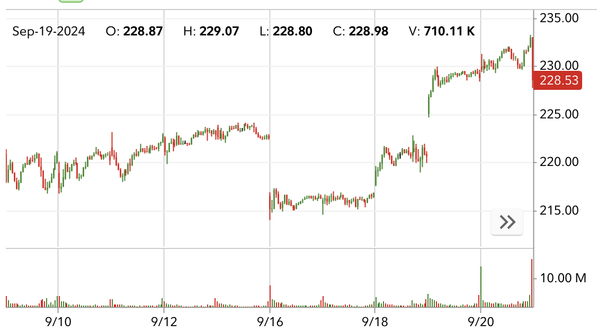
09/13 - everyone suddenly realise LLMs are expensive; NVDA goes down 4.5%. 09/18 - feds lower the rate by 50 points; NVDA goes back up to the prior level. Keep it up, market.
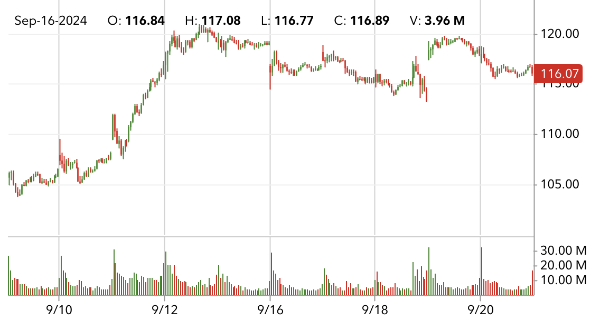
Macy’s doesn’t care.
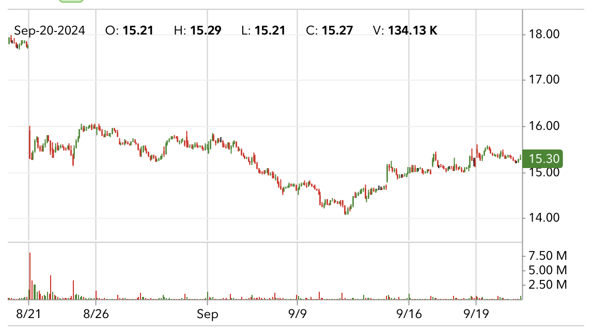
Sep 21, 2024 - This is good: The Collapse of Self-Worth in the Digital Age. The part that resonated with me most:
when a person’s innate value is replaced with exchange value, it is as if we’ve been reduced to “a mere jelly.”
I remember the times where I put maximum effort and long hours over more than a year to achieve the next invidividual contributer level. Eventually, with the project success, I got it. My level became IC5, as opposed to the measly IC4. Then I got some form of a depression. Because my whole self-worth was reduced to number 5 by the authority, that I put most of my waking hours in.
Sep 06, 2024 - Added Precision-Recall
Sep 04, 2024 - Added Sociocracy 3.0 and Zerocracy
Sep 02, 2024 - Someone told once a theory that the most comfortable bed wouldn’t the softest one.
It would be a bed that perfectly follows your body shape and provides equal support everywhere.
That makes sense to me.
You can go to a beach, lie in sand a wiggle a bit, until you shape up the sand around your body.
But there’re always many distractions, like sun, wind, noise, and insects, eww.
Or maybe the sensory deprivation tank, where you float in dense salty water in complete silence and darkness.
I’m not sure how would it work with turning around, or involuntary movements during the sleep.
Mark Rober made a Liquid Sand Hot Tub video where he explains the sensation of being submerged under sand, as a weighted blanket.
The sand is pretty irritating for a sleep, though.
Hygiene of using sand pit as long-term bed is also questionable.
Aug 30, 2024 - Added 100 questions for Washington state in Aug 2024 (with dropdowns), 100 questions for Washington state in Aug 2024
Aug 30, 2024 - Crazy man market analysis (close).
I jinxed it for eBay, it dipped right after I called it stable.
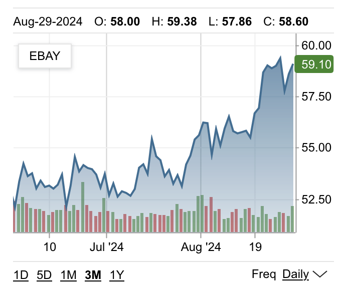
NVDA didn’t dip a little bit, it dipped significantly.
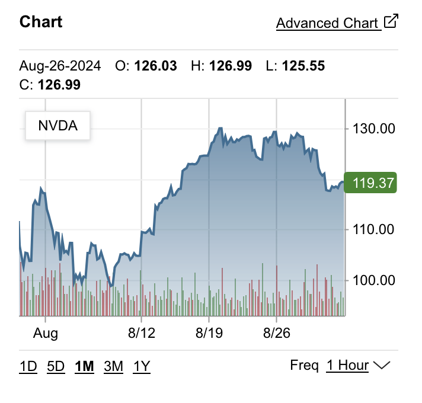
Aug 30, 2024 - Crazy man market analysis (open).
What’s going on with MSFT? Nothing they’re OpenAI’s bitch now.
NVDA dipped down, taking FSELX with it. The news show that they’re going to come back strong soon.
PDD is bonkers, random off-market jumper.
Macy’s stable, time to start stocking up (from MSFT, for example) for November.
Aug 26, 2024 - Added Macy’s stock seasonality, Tree Clip
Aug 26, 2024 - Crazy man market analysis.
eBay gains popularity, as more people are willing to buy second-hand eletronics (read phones). When most of the tech stock went down in July, eBay kept growing.
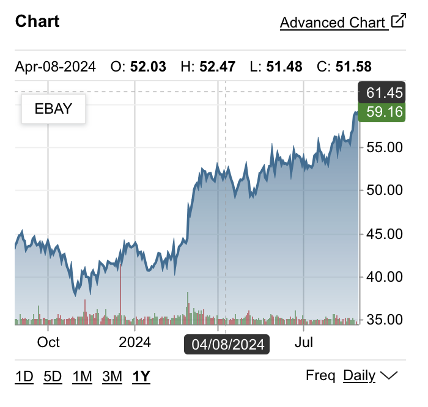
Nvidia dipped a little bit on the overall growth trend.
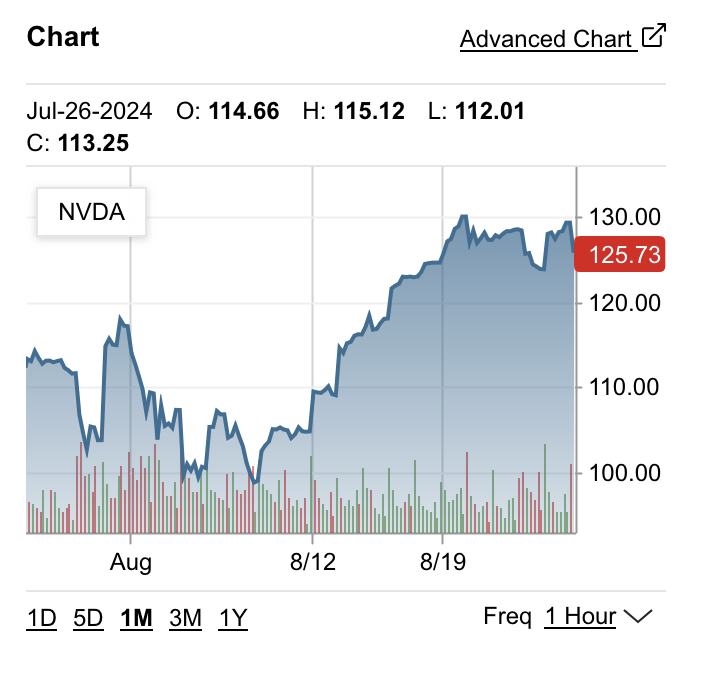
What the hell is this PDD company? It tanked a lot. It’s last year has been very volatile.
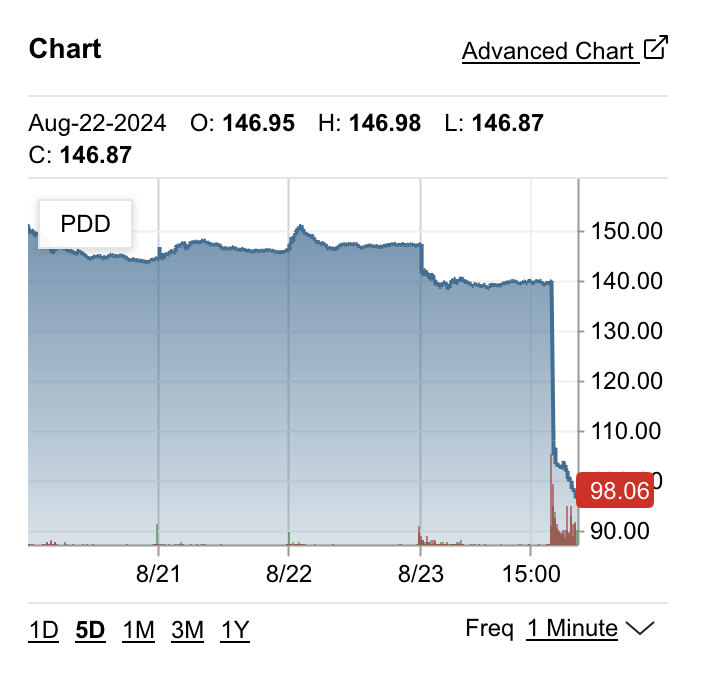
Just look at this MRM shit. Closed at $2.48, opened at $7.01. Daytrading my ass.
Macy’s got a bad look from big guys and going down. Not all the way to the bottom just yet, let’s take a look in 5 days.
Aug 24, 2024 - I like the idea how software systems are complex and complicated.
Complex stands for inherent problem the software solves.
Complications come from solving the problem in a wrong way.
It could be using bad abstraction, over-engineering, inadequate team structure resulting in mixed component responsibilities.
Software is meant to solve the complexity of the real world problem, but it always introduces unnecessary complications for maintainers.
Complexity can’t reduced, as it is inherent to the problem at hand, while complications constitute technical debt, that can and should be addressed but rarely is.
The same thinking can be applied to life in general.
The inherent conflict of life is that it’s finite and energy consuming.
Besides that, most of the struggles we go through are artificial complications.
The worst examples of such struggles come up when complications take over complexity.
People get caught in the minutiae of everyday life, chasing synthetic goals, imposed by other people who have no interest in their wellbeing.
Governments create laws and procedures that are designed to prevent crime, but make everyones lifes harder.
Rich people find ways to suck money from poor.
Personal decisions must go through an approval of some external entity.
Social contracts prevent expression of internal desires.
Aug 23, 2024 - A rare syndrome of unprepared food censorship
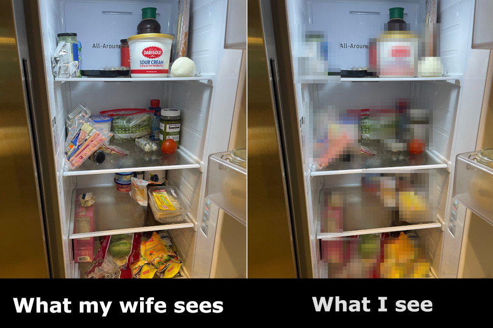
Aug 18, 2024 - this tea bag summarizes my thoughts of food in the US. The brown dust resembles tea only in color. But that’s what Americans like. No sophistication, big quantities, low price.
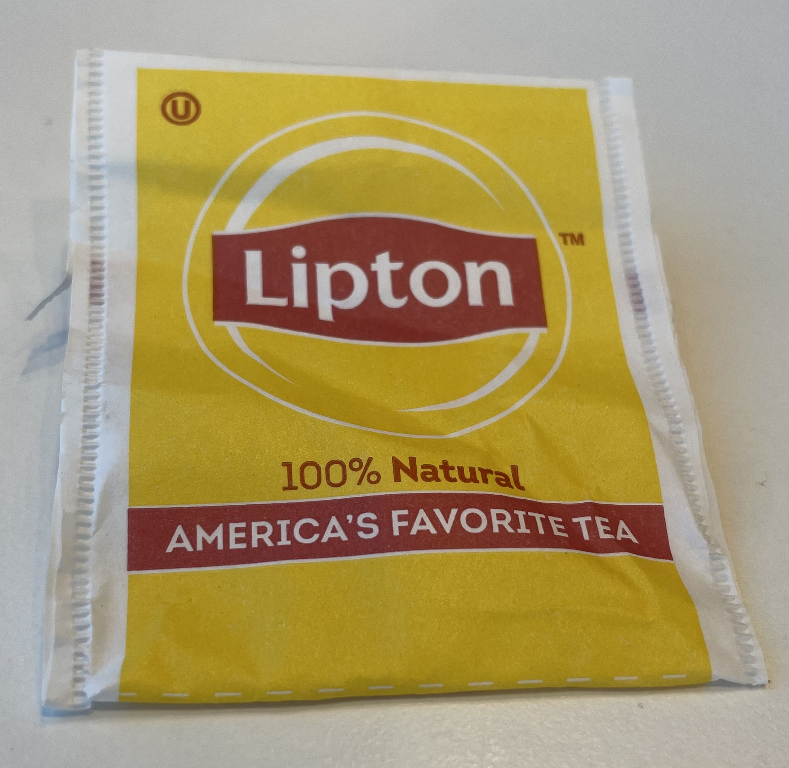
Aug 09, 2024 - Added Cooling Water with Ice
Aug 07, 2024 - I was watching Expanse and was fascinated by their handheld devices (phones?).
I liked the way they wirelessly cast screen using two-fingers swipe up in the direction of the cast target.
I also liked how they share message attachments.
The operating systems they are running seem to provide consistent experience across devices, so I assume there’s a tight integration.
What I liked most is that attachments contained two kinds formats.
One was a presentation layer, similar to a static HTML page.
Another was data (like JSON, or CSV) that can be direcly imported to a database or Jupyter Notebook.
Like one time a person sent a bunch of people profiles, and the other side reviewed them and imported to their contacts.
Another time it was asteroid coordinates, that were presented as an interactive 3D model, but also could be imported into the navigational system.
I wonder if we can build this today. Each attachment would be an archive with HTML file that pulls raw data from a JSON file sitting by its side. But also having a “Download” button that exposes the data file directly. Or maybe a single HTML file with all the small data and assets embedded, and large assets pulled from S3.
Aug 01, 2024 - I find this to be an interesting phenomena in driving.
When there are two lanes and there’s a merge ahead from the right lane.
In the perfect world the merge is fair, the cars from the left and right lane alternate and both lanes go at the same speed.But what happens instead is some cars from the right lane merge early breaking the alternation order.
Then the car from behind in the right lane goes ahead and merges before the early merger.
And this breaks the pattern so that some cars from the right lane get into the left lane without a car between them.
The result is that the right lane goes faster.
Jul 05, 2024 - Added It’s not cold in Russia
Jul 02, 2024 - I have this idea about people who live routine lifes and don’t want to change anything about it.
I picture a man who lies in a mud puddle.
Like these therapeutic mud bath spas.
While he’s moving the limbs, the mud stays liquid.
When he stops moving, the surface of mud dries out and becomes hard and sharp crust.
The crust traps the man an making any movement is now takes significant effort and hurts.
Without movement it’s comfortable, though.
Jun 26, 2024 - When you look at life back, you can tell the defining traits of your personality and the key decisions you made a long time back.
Sometimes they do feel like a big deal, and you know it’s important right away.
Sometimes it’s just minutae that doesn’t seem of any significance in short term.
And sometimes we obsess a lot about something that we can’t even remember five years down the road.
But never have I made a critical decision thinking how would I feel about it when I’m fifty.
Something about how the dots get connected once you look back.
Jun 17, 2024 - I have this idea of a fat cat.
Fat cat lives a lavish life, with all needs and desires satisfied. The cat is incapable of surviving on his own, though.
In order to maintain agility he has to sacrifise the comfort, and intentionally lower the quality of life. If he settles for too long, the fat will bloat the body and kill the cat with a heart attack.
Jun 14, 2024 - What do you call a fish with a monocle?
Sofishticated
Jun 13, 2024 - Any day when I can use modulo division is a good day. Is there more to this than that? I don’t think so.
Jun 01, 2024 - Added Next bus
May 30, 2024 - Added What is I
May 15, 2024 - Good summary for things you can do for QA/Testing: https://www.functionize.com/blog/production-testing-what-why-and-how
May 07, 2024 - We chose to integrate a Large Language Model not because it is easy, but because we thought it is easy.
May 06, 2024 - Nice - Lucus Landers
May 03, 2024 - This is great Woodworking as an escape from the absurdity of software by Alin Panaitiu. Like and subscribe.
Apr 26, 2024 - Added Expect the unexpected when excepting Pickling Exceptions
Apr 25, 2024 - Added Seattle Bakeries List
Apr 19, 2024 - When I look at a bad design, I can tell it’s bad. I can point a few issues. But I can’t tell how to make it good. That’s why I’m not a designer.
Apr 18, 2024 - Aspects to consider for scraping:
Parallelism
Batching
Retrying
Throttling
Acceptable error rate
Metrics
Reporting
Cancel and Resume
Apr 12, 2024 - Greatness comes from character. Character forms out of people who suffered. – Jensen Huang
Fear leads to anger. Anger leads to hate. Hate leads to suffering. – Yoda
Apr 12, 2024 - Software attempts to automate a real word process through creation of a limited model of the important aspects.
The depth of the real world is infinite, and our understanding of it is shallow.
But the computer model’s depth is laughable.
Mar 27, 2024 - a burst of birth force to warm a worm worm.
Mar 18, 2024 - You won’t learn how to declutter until you get too much shit you don’t need.
Mar 16, 2024 - Added Meaning of Life
Mar 15, 2024 - The Grug Brained Developer - A layman’s guide to thinking like the self-aware smol brained
Mar 14, 2024 - Alan Watts - Myth of Myself - A layman’s guide to thinking like the self-aware smol brained
Mar 09, 2024 - My favorite quote from Dune:
«Where is Alia?» she asked.
«Out doing what any good Fremen child should be doing in such times,» Paul said. «She’s killing enemy wounded and marking their bodies for the water-recovery teams.»
Feb 25, 2024 - GPT4 illustration for a paragraph from a book I’m reading:
The faraway rock profile was like an ancient battleship of the seas outlined by stars. The long swish of it lifted on an invisible wave with syllables of boomerang antennae, funnels arcing back, a pi-shaped up-thrusting at the stern.
—Muad’Dib by Frank Herbert.
Feb 23, 2024 - GPT4 prompt to use shell:
Act as a Linux terminal. Generate bash commands to accomplish a task. Do not explain, and do not provide instructions. Only generate the shell code to accomplish the task. The task is:
Example task:
Add this public key to authorized SSH keys for user “WubbaLubbaDubDub”: ssh-rsa AAAAB…
Feb 15, 2024 - Встретить дорогого гостя с распростёртыми ногами.
Feb 12, 2024 - More ripped than 90% of software engineers. Better at programming than 90% peeps in the gym. Top 1% at making up uplifting ratings. Dan Luu explained it nicely in 95%-ile isn’t that good.
Feb 11, 2024 - I thought of Walgreens as a pharmacy. But turns out they sell cigars and booze. Умом Россию не понять.
Feb 08, 2024 - Random list of life challenges to put current setbacks in perspective:
Getting COVID as a single parent without any family support.
Losing the only source of income while being a head of household and paying mortgage.
Bereave a parent while being overseas.
Fighting opiate additiction caused by pain medication.
Feb 01, 2024 - Added My favourite aliases for Git (and vi)
Jan 27, 2024 - Sharpest pencil in box tears the paper.
Jan 24, 2024 - My favourite aliases for Git (and vi)
Jan 23, 2024 - One thing that seems to be a upside of Golang as compared to Python, is that it’s harder to do the wrong thing. Which is true due to typing, obviously. But also for the toolset.
With Python, you gotta be disciplined to keep your third-party requirements in order. It’s not much work, but you also can get away without doing it. And if there’s no one to catch you in action, this might bite years later.
You hire smart people, who know their stuff, but don’t know Python (and are not really into learning the advanced topics of Python, because they are hired for the stuff they know well).
And they do whatever is easier to get things done.
And it’s not always the right thing to do.
The path of least resistance in Python is:
no type annotations
no linter
no autoformatter
no requirement files (and no version pinning)
no packaging
no meaningful module and class breakdown
no sensible docstrings or docs website.
I’m not saying this is how all the projects go. But this is what you might get if you don’t put any experienced folks on the project.
Whereas with Golang, you have to get the most of the things right, or it won’t work at all. :mic-drop:
Jan 15, 2024 - Listening to Дельфин — ПРОЩАЙ ОРУЖИЕ.
From song to song, he touches on the same set of topics.
These are the same topics he touched on in his previous album.
And the album before that.
It’s as if a person has, say, 3-4 major themes in life.
And whenever he gets inspiration, it’s gonna be something along those lines.
This made me think about the major themes for me and the people I know.
So far, the morning slumber theory checks out.
Lil’ help from GPT4:
Psychology and Personal Development: In psychology, especially in the field of personality and identity studies, there’s an understanding that people often have core beliefs, values, and experiences that shape their identity and worldview. This is sometimes explored in the context of life stories or narrative identity, where people construct their identities based on key life events and themes.
Literary Studies: In literature, this concept is often discussed in terms of an author’s thematic preoccupations or motifs. Some authors and artists are known for returning to the same themes, questions, or motifs throughout their work, which can be a reflection of their personal obsessions, experiences, or worldview.
Keywords: core beliefs, core values, cornerstone, identity, worldview, key life events, themes, thematic preoccupation, motifs.
Jan 11, 2024 - This Herbert guy, I’ve got questions.
Is he happy? Does he feel fulfilled and content?
Is he doing it out of passion, or is there someone else paying him to do it?
Does he feel like a robot? Did he choose this life?
Is it a stepping stone to achieve something different?
Jan 11, 2024 - Distinction without differentiation, efficiency without effectiveness.
Jan 06, 2024 - Set up the Apple Weather app to ping you whenever it rains in Seattle, and never pick up your phone to an empty notification screen.
Jan 06, 2024 - Picture a person in a spacious room. His name is Herbert.
He’s a scientist, and he studies and works all day long without any need to go out, make food, do laundry, or anything.
He has no distractions; he’s fully focused on his work.
No Netflix, no games, no TV at all.
Yet, he has access to all the information he needs for work.
No people, except for brief visits of housekeeping.
A perfectly balanced diet, regular sleep schedule, no viruses, no disturbances.
Jan 05, 2024 - Another example of the situation I can’t quite put my finger on. When you assemble an IKEA cabinet with two kinds of bolts, a long one and a slightly shorter one.
And it’s really hard to tell which one you have in hand unless you put them next to each other.
So, when you start assembling the cabinet, you put a shorter bolt in place and keep assembling until, at the last step, you are left with the longer bolt, and you realize that you actually need a shorter bolt which you used at the first step. Now, you have to disassemble the cabinet to switch the bolts.
It’s a simple mistake that is not obvious at the moment but comes up later when it’s harder to fix it.
Jan 04, 2024 - Here is a bureaucratic game idea.
Classic arcade game setting with a top-down view and simple cartoonish graphics.
First level. You stand in line, and the line moves slowly (left to right on the screen). Each person in front of you moves a split second after the person in front of them. Your goal is to catch up as quickly as possible.
Second level. There are human hunters standing a few people after you, and they are shooting at you. You must dodge their bullets, and when you dodge, the bullet kills a person in front of you. When the person in front of you dies, you can take their spot, which speeds up your progressions through the line.
Third level. While standing in line, you also need to fill in a form. This form includes some math quizzes. While filling out the form, you keep dodging the bullets, making sure that bullets don’t hit the person who will be accepting your form who stands in front of you.
I should try building it using Rosebud: Invite link, Launch HN post
Dec 22, 2023 - so, I have this idea, that I can’t articulate properly for years. It’s like with Ikea furniture, that seems bland and minimalistic. It doesn’t express any style or beauty, it’s functional and that’s it. Another example is people who focus their self expression in the way they look. Be it some special hair style, choice of clothes, or tattoos. Contrary to people who look bland, maybe simple. But express their selves in their thoughts. It feels like people who spend their time on their looks trade it for having something worthy in their heads. The parallel with the furniture is that you can make your prefab functional furniture truly yours and personal with DIY decoration, and you can spend good times wondering your mind, as opposed to going to hair stylist, or picking a tattoo that matches your personality.
I guess, what I’m trying to say is, your self expression is not for showing off someone else’s craft, it’s for you alone and small circle of people who matter to you.
Dec 09, 2023 - okay, let me teach you how to read. You sit in an armchair, put your glasses and beard on. You must sit very still for a long time and look the smartest you can.
(Image prompt: Draw a sketch picturing a middle aged white man reading a book at home. He sits in a comfy armchair next to a standing lamp and wears glasses)
Dec 06, 2023 - ADHD test for adults: pay attention spectating 2-hour Scrum planning meeting in a new team.
Dec 03, 2023 - Added Self-hosted PaaS
Dec 02, 2023 - I’m brewing on these topics:
Sailor is nice, it combines:
Git-push-driven deployments
Dynamic nginx configuration
Letsencrypt auto-provisioning
uWSGI Emperor mode as a generic supervisor
My use case is a bit different. I’m looking into adding Tailscale, dropping SSL, and replacing uWSGI with systemd. Also, I might look into replacing nginx with Caddy. I also want a cleaner Python virtualenv management.
What encourages me most is that Sailor is a single Python file of 2k lines.
Oct 31, 2023 - Added Tell me a story about how you coached a team member
Oct 26, 2023 - How to set up a receiving email server on a Linux machine
Oct 25, 2023 - Added Reaction to interview rejection emails, Scaling technical consistency
Oct 25, 2023 - Notes for Scaling technical consistency
Oct 23, 2023 - Notes for Four Key Metrics for a Software Development Team
Oct 17, 2023 - “Mice equal, like a general sequel.” - Youtube autogenerated subtitles.
Oct 16, 2023 - Added article on Mutable types in Pydantic default values
Oct 12, 2023 - Notes for Being Accountable When You Don’t Have Control
Oct 04, 2023 - Turns out you can’t use regular RJ45 connectors with flat ethernet cables because the wire diameter is much smaller.
And it’s really hard to find the connectors for flat cables due to low supply.
It’s like half the size of the regular round cable wire.
I had to learn it the hard way.
Lesson learned: when buying ethernet cable pay attention to the wire gauge.
AWG 24 is okay, but AWG 32 is too small.
Oct 01, 2023 - Observation: if you organize kid’s birthday party in Minecraft theme, you’re about to get a whole lot of Minecraft-themed legos.
Sep 27, 2023 - Session Authentication and Single-Page Applications
Sep 24, 2023 - Notes for A Senior Engineer’s Guide to the System Design Interview (Part 4)
Sep 23, 2023 - Notes for A Senior Engineer’s Guide to the System Design Interview part 2 and part 3
Sep 20, 2023 - Notes for A Senior Engineer’s Guide to the System Design Interview (Part 1)
Sep 18, 2023 - Added article Using GPIO on an industrial mini PC
Sep 07, 2023 - Libraries to review: Fastapi, pydantic
Aug 30, 2023 - Notes for Why we always end up with waterfall, Robots vs. Programmers
Aug 29, 2023 - Notes for Gitlab values on iteration, Gitlab’s Directly Responsible Individuals
Aug 29, 2023 - Questions for a hiring manager
Aug 19, 2023 - Notes for Why you should check your secrets into Git, How to get started with async
Aug 18, 2023 - Notes for What is a directly responsible individual?
Aug 17, 2023 - Notes for Cognitive load is what matters
Aug 16, 2023 - Notes for GitHub Accelerator
Aug 15, 2023 - Notes for Objective-Driven AI
Aug 14, 2023 - Notes for How a startup loses its spark, How Netflix Reinvented HR
Aug 13, 2023 - Notes for Team Topologies
Aug 11, 2023 - Notes for How to use spikes as a foundation for ADRs
Aug 10, 2023 - Notes for Scaling the Practice of Architecture, Conversationally
Aug 10, 2023 - relative, related, relevant.
Aug 9, 2023 - Notes for Decentralizing the Practice of Architecture at Xapo Bank
Jul 19, 2023 - the more I work on the project docs, the more I wonder:
Why none of my previous jobs had this level of documentation?
Does the work I’m doing add value to the project, or am I caught in a perfectionist loop, polishing somethings that shouldn’t even exist?
More reading material: https://abseil.io/resources/swe-book/html/ch10.html
Jul 13, 2023 - finally, an opinion on downsides of multi repo:
They pay for it by having to invest a lot into release management, version synchronization across multiple teams, much more integration testing, worse understanding of the product by individual developers / teams, and, in general, lower quality of the product. But, off-the-shelf VCSs don’t allow for sharing large repositories easily, and, of course, the problem this merge queue is trying to address would grow more severe with the size.
Jul 9, 2023 - I converted my Sphinx source files to conform to Johnny Decimal, and implemented the idea to remove friction for adding new articles.
I published this as gdocsync. The project is a bit raw, but I’m already dog-fooding it here.
Jun 28, 2023 - Nice collection of articles from AWS: The Amazon Builders’ Library
Jun 26, 2023 - “capturing the fast-growing demand” is all it is about these days.
Jun 22, 2023 - interesting quote from “A Philosophy of Software Design” book by John Ousterhout:
Although I am a strong advocate of unit testing, I am not a fan of test-driven development. The problem with test-driven development is that it focuses attention on getting specific features working, rather than finding the best design. This is tactical programming pure and simple, with all of its disadvantages. Test-driven development is too incremental: at any point in time, it’s tempting to just hack in the next feature to make the next test pass. There’s no obvious time to do design, so it’s easy to end up with a mess.
Jun 21, 2023 - I’m gonna call it “Public employee handbook, built as a static website, using Johnny Decimal system.”
Jun 20, 2023 - I’m brewing these 3 ideas together:
Johnny•Decimal system to organise projects.
Async communications in distributed teams, promoted by Zulip.
Jun 20, 2023 - Why remote works
Jun 17, 2023 - whenever you say something stupid Santa Claus kills one gnome. Which is also stupid to say. So it makes it two gnomes each time.
Jun 15, 2023 - Quick non-senstive abbreviation to mark especially sensitive critical code sections: TTCLYMOIWTYMLYTTC - Treat This Code Like Your Mamma Or I Will Treat Your Mamma Like You Treated This Code
May 25, 2023 - Quotes from Ask HN: How do you not take criticism of your work personally?:
A high criticism tolerance is learned by understanding that ones self worth is not attached to output or delivery. (This is hard in our industry) It comes from self-acceptance and compassion. And these values are learned early on. You’ll find that the people that break down at the slightest criticism the most are those that were criticised the most as children as well. Those that had no room for being anything other than perfect. Where value was obtained from performance. To take it even further…why see it as criticism at all? You are not your lines of code.
As much as i like the concept in general in life, in this case its just “you are not your lines of code”. Also people who criticize people make a mistake kind of. Always criticize the code, not the person
(Sometimes anger is healthy, it may also be a signal to us that our boundaries have been violated.) Exactly. And if that boundaries get violated repeatedly in the same situation (especially by the same people), it is fine to release that anger in a controlled way. I’ve come to the conclusion that some folks haven’t left the state where they sometimes need a (vocal) pat on their hand to realize they crossed boundaries they shouldn’t cross. If you can play that game, congrats. Also, do not swallow your anger. Find a non-destructive, non-harmful way to release it. As anger is a physical reaction, the easiest way is to go for a walk, ride your bike or whatever. Whatever floats your boat should be fine.
May 20, 2023 · Such a great article!
DevEx: What Actually Drives Productivity
Example DevEx metrics
ASPECT |
FEEDBACK LOOPS |
COGNITIVE LOAD |
FLOW STATE |
|---|---|---|---|
PERCEPTIONS |
• Satisfaction with automated test speed and output |
• Perceived complexity |
• Ease of understanding documentation to focus and avoid interruptions |
WORKFLOWS |
• Time it takes to generate Cl results |
• Time it takes to get answers to technical questions |
• Number of blocks of time without meetings or interruptions |
KPIS North star metrics
Overall perceived ease of delivering software
Employee engagement or satisfaction
Perceived productivity
May 5, 2023 · Looks like I lived under the Python rock for some while. Here’s my reading list for the weekend:
March 1, 2023 · The biggest mistake an engineering manager can make in weekly 1:1 is to talk more than to listen. Engineer without their voice is unhappy engineer and a sure fire attrition.
March 20, 2023 · I have this magical shell script running, that configures split tunnel for a single user.
I wrote it few years ago. But I can’t read it now.
#!/bin/sh
iptables -t mangle -I OUTPUT -m owner --uid-owner deluge -j MARK --set-mark 42
iptables -t mangle -I OUTPUT -d 192.168.0.1/24 -m owner --uid-owner deluge -j RETURN
iptables -t nat -I POSTROUTING -o tun0 -j MASQUERADE
ip rule add fwmark 42 table 42
for f in /proc/sys/net/ipv4/conf/*/rp_filter; do
echo 0 > $f
done;
# ip route add default via $(ifconfig -a tun0 | grep -o 'P-t-P:[^ ]*' | cut -d : -f 2) table 42
ip route add default via $(ifconfig -a tun0 | grep -o 'destination [^ ]*' | awk '{print $2}') table 42
February 1, 2023 · Davit and I have been working on PaydayProtection.com for about a week in total. So far we got a landing page to collect emails of the people who will early access to the service once we launch it.
Building it is fun. I learned 11ty and tailwind, refreshed my CSS. The whole thing is deployed to Netlify and uses Netlify Forms and Functions to save the submitted emails. So far we are well into the free tier.
Many parts of the site are generated by, or with help, of ChatGPT and other AI services. Their output is grammatically correct, but dull and soulless, which doesn’t work well with marketing we’re looking for.
We gonna have a professional designer work on the page, and give us mock ups, that I should be able to quickly enact through the 11ty+tailwind boilerplate I built.
I started reading “Start small, stay small: a developer’s guide to launching a startup” by Rob Walling. The book is exciting and straight to the point. I already can see how much our effort is misplaced.
We need to work on our goals, and really figure out the marketing effort, and how we can validate the idea.
January 7, 2023 · My favourite Chipotle order: salad bowl, no rice, pinto beans, chicken, grilled veggies, tomatoes, sour cream, shredded cheese, guac, and lettuce on top.
It has nice balanced taste, healthy combination of ingredients, and sane number of calories.
Chipotle offers some junk food options, but it’s possible to pick just the good stuff.
These days, it’s my first choice in the shopping mall food courts.
November 17, 2022 · Lessons learned from climbing
You look at your arms but all the lifting is done by your legs. When you begin, it feels that the arms strength is the bottleneck, but the progress comes from learning to keep arms relaxed and controlling your balance to let the legs do the work.
The obvious way to progress seems to be from building up strength. But losing weight can actually boost your performance in shorter time.
Sometimes when you plateau, the best thing is to take a break. Muscles grow when they rest, and when you come back you suddenly have more endurance and can do harder routes.
One of the super powers of experienced climbers is to be very aware of getting tired, so they can find a good spot to rest on the wall.
October 17, 2022 · Hey, network! We’ve opened new positions to scale our product nationwide! We need:
Scum master.
Software development psychol.
Amel ginger with sloth filling experience.
Extra points for having experience with:
Scrumbut implementation.
Technical debt reprioritization.
Ass-covering paper trail.
Reach out to learn more, or if you know someone who fits the role!
Running log#
WEEK MO TU WE TH FR SA SU TOTAL
0704 - 2 6 7 - - - 15
0711 4 - - 4 6 4 6 14
0718 - - 6 - - - - 6
0725 - - - - - - - 0
0801 10 4 6 - - - 10 30
0808 4 - 10 - 8 - - 22
0815 - 4 - 6 6 - - 16
0822 8 - - 6 - - - 14
0829 12 - 6 - - 6 - 24
0905 6 - - - - - - 6?
0912 12 6 - - - - - 18
0919 - - - - - - - 0
0926 - 4 6 6 - - - 16
1003 6 - 4 4
October 6, 2022 · What’s the name for it?
You are going to get a lunch at home;
But you need a clean plate;
All plates are dirty and stacked in a kitchen sink;
You’re out of dish washing liquid, and have to use dishwasher;
Dishwasher is already full with dirty cups;
You’re out of dishwasher tablets, and need to buy them;
Closest store is closed, and you need to drive to the next one;
Car has a flat tire, that has to be fixed first, and you need to get to tire shop;
Car is out of gas, and you need to get the gas by foot.
This example is long and unrealistic, but I see this happening all the time. Solution for a small problem is blocked by something else, that requires significantly bigger effort. Is it akin to technical debt? Just not exactly technical.
October 3, 2022 · Scratched my self-hosting itch with two new additions to my home server:
Nextcloud and Storj.
Nextcloud is a bit weird Snap installation with PHP, MariaDB, and Redis. I don’t feel comfortable exposing self-managing PHP applications (read Wordpress-level security), so I’ve put it behind my 2FA cloud proxy. And of course it doesn’t work well with the Nexcloud mobile client. Aside from security, performance on my old home server is not that great. Image previews are generated on-demand, so it takes awhile to see my 300 GB photo gallery. Apple live photos seem to have no support too. All in all, I don’t think it can replace Google Photos, as I hoped.
Storj is an implementation that I had another day. Pretty good one. Set up could have been better streamlined, so it took few hours to hook up a Raspberry Pi 4 with 2 TB external HDD storage. As a side effect I know have an Etherium wallet, that should be used for pay outs. We’ll see. Overall, I like their implementation a lot. From ideation to performance and security aspects. I wish I could make it bare-metal, but I caved too early and went with the recommended Docker installation.
Climbing log#
August
9: 10a, 10c, 10c, 11a, 11a
11: 10c, 10d, 11a, 10c, 11b, 10b
16: 10b, 10d, 11a, 11a, 11a
18: 10c, 10d, 11a, 11b, 11b
August 26, 2022 · Everything looks big when your room is too small. Visit other houses and get outside to put things back in perspective.
July 11, 2022 · Ran 4K in the morning in 22 minutes. Felt like slow-pace, but the time is the same…
July 9, 2022 · Ran 6K in the evening in 33 minutes. Felt like fast pace.
July 8, 2022 · Ran 2K in the morning. Felt like faster pace, but took actually 12 minutes.
July 7, 2022 · Ran 5K in the morning.
July 6, 2022 · Ran 2K in the morning. Again, pain in the middle of chest. Ran another 4K in the evening, without pain.
July 5, 2022 · Ran 2K in the evening. Pain in the middle of chest stopped from going on the second lap.
July 4, 2022 · Completely recovered from Covid, tested negatively.
June 30, 2022 · Almost recovered, still sleeping more, and some kidney pain.
June 29, 2022 · Feeling better, except for kidney pain.
June 28, 2022 · Slept around 20 hours, kidney pain got worse.
June 27, 2022 · Slept almost whole day, kidney pain got worse.
June 26, 2022 · Slept almost whole day, started to feel pain around kidneys. Tested positive on homekit.
June 25, 2022 · Started to experience cold symptoms: dizziness, body weakness, headache, cough, and running nose.
June 19-24, 2022 · Took a work trip to California. Caught Covid-19 somewhere around June 22.
June 15, 2022 · Topped my personal record. 6K in 35 minutes.
June 14, 2022 · Fell from a 5.11a track on my thumb toe and bent the nail. Did another 3 tracks afterwards, though.
June 8, 2022 ·
I enjoyed KK’s article on Truth vs Trust.
It talks about a utopian news outlets that track down origins of every statement.
Not a fact check (that journalists are “doing” now), just a chain of who quoted who.
The article’s start point is that we can’t infer truth from a statement itself.
But we can track who said what and an origin of every statement.
The problem is though, that for polarizing topics (where truth can’t be established, and we need to rely on trust) all modern news outlets would cover facts that are convenient for them, and omit everything else.
Which means, that trustworthiness of a source is not a scalar, but more of a 3D matrix, that has topics, time, and past dishonesty as axes.
A Tech Lead is a software engineer responsible for leading a team and alignment of the technical direction. Tech Lead has a focus on the technical aspects, or the “How.”
Tech Lead blends:
leadership skills
architecture skills
development skills
Leadership skills include:
coaching
influencing
delegation
They steer their team towards a common technical vision. They are accountable for the quality of the technical deliverables for the team.
June 7, 2022 ·
I picked up running a week ago. Today’s personal best is 4 km in 23 minutes.
Fun fact: here’s what happens when you burn a molecule of triglyceride, the predominant fat in a human body:
C55H104O6 + 78O2 --> 55CO2 + 52H2O + energy
Oxidizing 10 kilos of human fat requires inhaling 29 kilos of oxygen to produce 28 kilos of carbon dioxide and 11 kilos of water. It means that you lose roughly the same amount of fat as you sweat.
May 30, 2022 ·
TIL that The Onion posts an article with the same title: “‘No Way To Prevent This,’ Says Only Nation Where This Regularly Happens” after every mass shouting.
And ironically it does nothing to prevent this.
May 29, 2022 · we went to Rocky Gap State Park’s campground for the Memorial Day. Met few nice folks, hiked a few miles, rented a canoe for a family ride on a lake, went star watching, had a lot of meat with beer.
Whether was great except for a short rain on the first day when we had to setup the camp. We built a short zip line from 3 truck straps, which was more fun during building than riding.
I’m still a bit confused by US style camps, which have too much convenience to my taste, that doesn’t let enjoy the nature to its fullest.
May 25, 2022 · Individual [car] companies, to me? It’s a distinction without a difference.
May 24, 2022 · When director of engineering rolls up the sleeves and refactors complicated piece of code, be double-vigilant in PR review.
Software engineering skills wear out pretty quickly if not practiced daily. No matter how good the person is in non-individual-contributor capacity, it doesn’t make them good with source code.
May 23, 2022 ·
I want to experiment with hosting .deb (.rpm?) packages on GitHub pages.
So far, I found these two tutorials:
https://assafmo.github.io/2019/05/02/ppa-repo-hosted-on-github.html
https://pmateusz.github.io/linux/2017/06/30/linux-secure-apt-repository.html
Would be nice to automate the index update and GPG signing through GitHub Actions.
Packages, that I’m most interested in hosting:
Kibitzr
Arr family: Radarr, Sonarr, Lidarr.
May 22, 2022 ·
Both individuals and the larger society have agreed to a set of interlocking delicate systems that are simultaneously highly effective and spectacularly vulnerable to disruption.
May 20, 2022 · Jotted a quick note On delegation.
May 17, 2022 · Notes on stress management.
Stress management is management of body and mind. Stress is an integral part of human biology. Without stress hormones we would simple die.
Survival kit: sleep, eat, exercise.
Sleep: 7-9 hours a day. Consistent schedule for work days and weekend. Reduce screen time before sleep. Keep phone outside of bedroom.
Food: three colors of vegetables and fruits. 3 meals a day. Standard servings - no overeating.
Exercise: stretch every now and then. Brisk walks for 30 minutes.
Don’t need to start doing everything at once. Build good habits one step at a time. Lifestyle change feels like a hard work.
Avoid quick fixes: pills, drinks, energy bars, phone apps, gadgets, books, movies. Those only increase the number of things to keep track of. And the relief is only temporary.
Write down the goals, not just say it.
Note what causes stress, make a list of situations.
Practice simple meditation several times a day. Focus on breath and do a body scan.
Relax muscles while sitting, one group at a time. Neck, shoulders, arms, back, legs and feet.
Hang out with friends to feel social connection.
Sources:
May 12, 2022 · The first XKCD comic mentioned in Software Engineering at Google:

May 10, 2022 · I just tried to explain gender transformation to my kids in popular Soviet song:
Я был когда-то странной игрушкой безымянной.
Protagonist is a male (animal), but he was a toy in the past. But toy’s gender is feminine. Which makes a weird mix of two genders in one sentence separated by the time.
The opposite example blew their minds:
Я была когда-то странным утюгом безымянным.
May 7, 2022 · Weird and disturbing fantasy from The Simpsons S33.E19 “Girls Just Shauna Have Fun”

May 6, 2022 ·
Here are some of my favorite quotes from songs.
I catch myself reciting this one during tough debug sessions:
Goddamn machinery
Why don't you speak to me?
-- "The Axe" by Thom Yorke
And this I love for the structure of the sentence:
When I am king
You will be first against the wall
With your opinion
Which is of no consequence at all
-- "Paranoid Android" by Radiohead
This one is for “broken pipe” and “Socket closed”:
Communication breakdown, it's always the same
Havin' a nervous breakdown, a-drive me insane
-- "Communication Breakdown" by Led Zeppelin
May 5, 2022 ·
Surprisingly, zero intersection on most used self-hosted apps
with this guy.
May 3, 2022 ·
I need to do something meaningful with my life or I’ll be wasting it.
May 2, 2022 ·
TIL that US schools close in observance of the Islamic holiday Eid al-Fitr, a festive celebration marking the end of Ramadan, a month of fasting observed by Muslims worldwide.
But they call it Quarterly grading/planning. Maybe to not stir the masses.